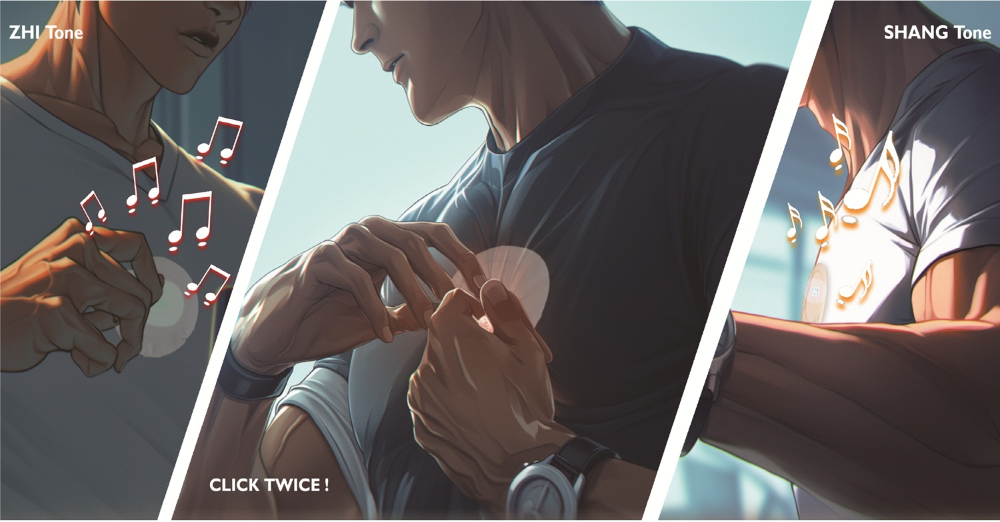

Master’s coursework · Team project
Five Elements
Music Resonance · Shenzhen, 2050

Five Elements is a speculative wearable concept for Shenzhen in 2050. Inspired by traditional Chinese Five Elements music, it imagines a skin-worn patch that combines music and tactile feedback in a personalized experience. The project explores how cultural references and multisensory interaction could inform future designs for everyday well-being.